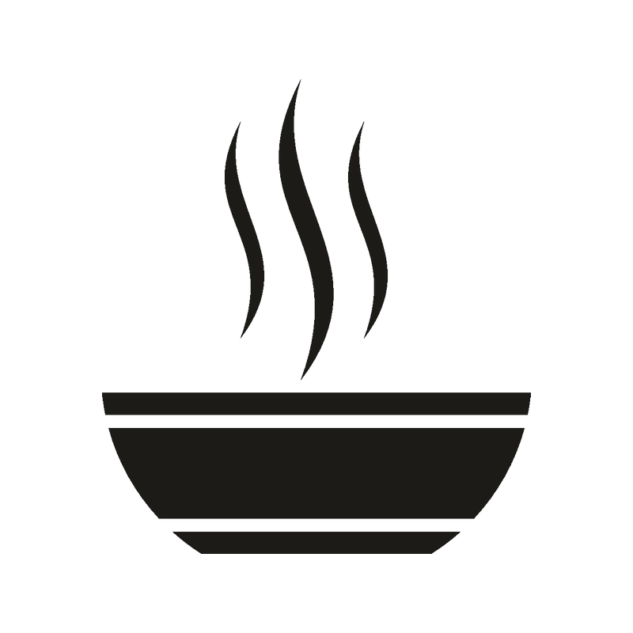

Новогодние рецепты для каждого
завтраки
обеды 
ужины
десерты 
напитки 

1. Молоко подогрейте в маленькой кастрюле на медленном огне.
2.Соедините какао-порошок и сахар, залейте их 200 мл теплого молока и перемешайте. Это нужно для того, чтобы в процессе приготовления не образовывались комочки.Всыпте какао.
3.Украсьте маршмеллоу.Приятного аппетита
Создатель: Несолёная Полина Сергеевна
Все авторские права защищены
Новогодние рецепты от нашего талантливого сообщества
Возможно размещение рекламы
этот шедевр был сотворён руками Несолёной Полины в студии Iteen Acsademy